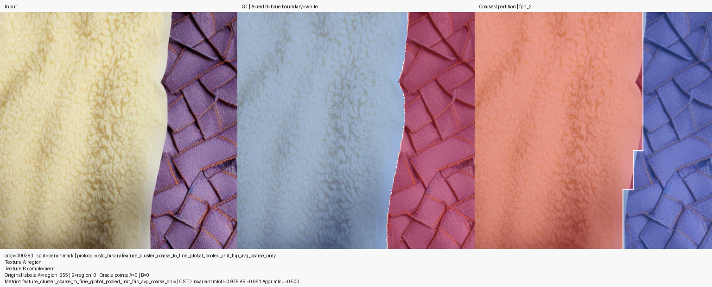
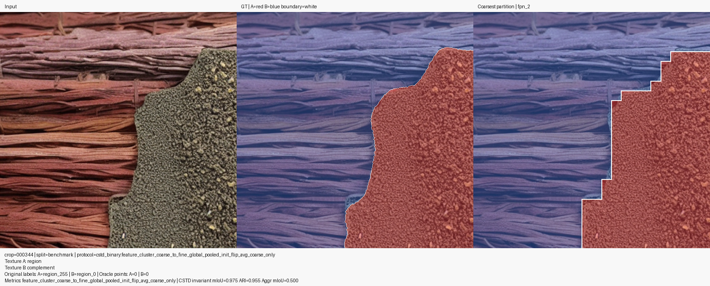
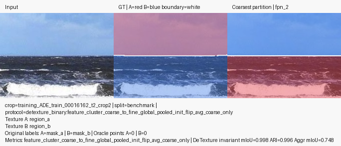
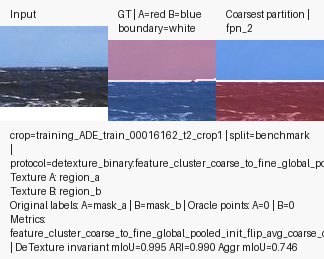
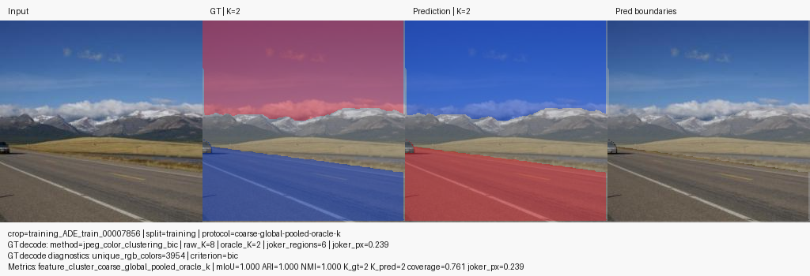
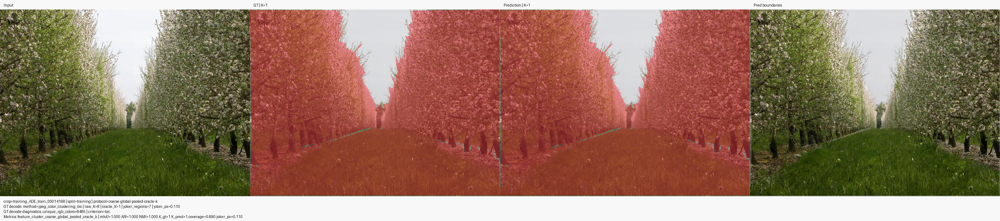

Paired Samples
3,531
3 paired datasets + 2 single-flavor
Flavor-aware benchmarking for Coarse Feature Clustering across RWTD, CAID, STLD, CSTD, and DeTexture. CSTD currently publishes Flip Averaged only; DeTexture currently publishes Flip Averaged only. A separate multi-texture DeTexture slice compares Oracle K against Predicted K.
Across the paired datasets, Flip Averaged leads RWTD and STLD, with the largest jump on STLD, while Coarse Only still leads CAID. CSTD and DeTexture are included as flip-only slices, so they expand coverage without affecting the paired deltas. Separately, DeTexture Multi favors Oracle K (0.715 mIoU, 0.646 ARI) over Predicted K (0.543 mIoU, 0.612 ARI).
The Coarse Feature Clustering flavor table is normalized onto the shared ArchiTexture binary evaluator (mIoU, ARI) so RWTD legacy aggregate-only summaries do not distort that comparison. The multi-texture table uses the DeTexture multi-partition contract instead.
All rows use the shared mIoU/ARI contract. Deltas are
flip_averaged - coarse_only; rows without a baseline are marked n/a.
| Dataset | Coarse Only | Flip Averaged | Delta mIoU | Delta ARI | Leader |
|---|---|---|---|---|---|
|
RWTD
aviadcohz/RWTD
|
0.824
ARI 0.698
|
0.840
ARI 0.726
|
+0.016 | +0.027 | Flip Averaged |
|
CAID
architexture:caid
|
0.674
ARI 0.496
|
0.659
ARI 0.451
|
-0.015 | -0.045 | Coarse Only |
|
STLD
architexture:stld
|
0.468
ARI 0.186
|
0.753
ARI 0.619
|
+0.285 | +0.434 | Flip Averaged |
|
CSTD
cstd
|
-
not published
|
0.745
ARI 0.578
|
n/a | n/a | Flip Averaged single-flavor only |
|
DeTexture
detexture_ade20k
|
-
not published
|
0.627
ARI 0.406
|
n/a | n/a | Flip Averaged single-flavor only |
Rows use the detexture_multi_partition_v1 evaluator (mIoU, ARI).
Deltas are predicted_k_full - oracle_k_full.
| Dataset | Oracle K | Predicted K | Delta mIoU | Delta ARI | Leader |
|---|---|---|---|---|---|
|
DeTexture Multi
detexture_ade20k_multi
|
0.715
ARI 0.646
|
0.543
ARI 0.612
|
-0.172 | -0.034 |
Oracle K
525 paired samples
|
Fast read: who leads, by how much, and representative samples.
Flip Averaged leads by +0.016 mIoU and +0.027 ARI.


Coarse Only holds the lead by 0.015 mIoU and 0.045 ARI.


Flip Averaged leads by +0.285 mIoU and +0.434 ARI.


Flip Averaged is published for CSTD, but there is no Coarse Only baseline yet.


Flip Averaged is published for DeTexture ADE20K, but there is no Coarse Only baseline yet.


Same-sample Oracle-K vs Predicted-K comparisons on DeTexture multi-region crops.
Oracle K remains ahead by 0.172 mIoU and 0.034 ARI.

